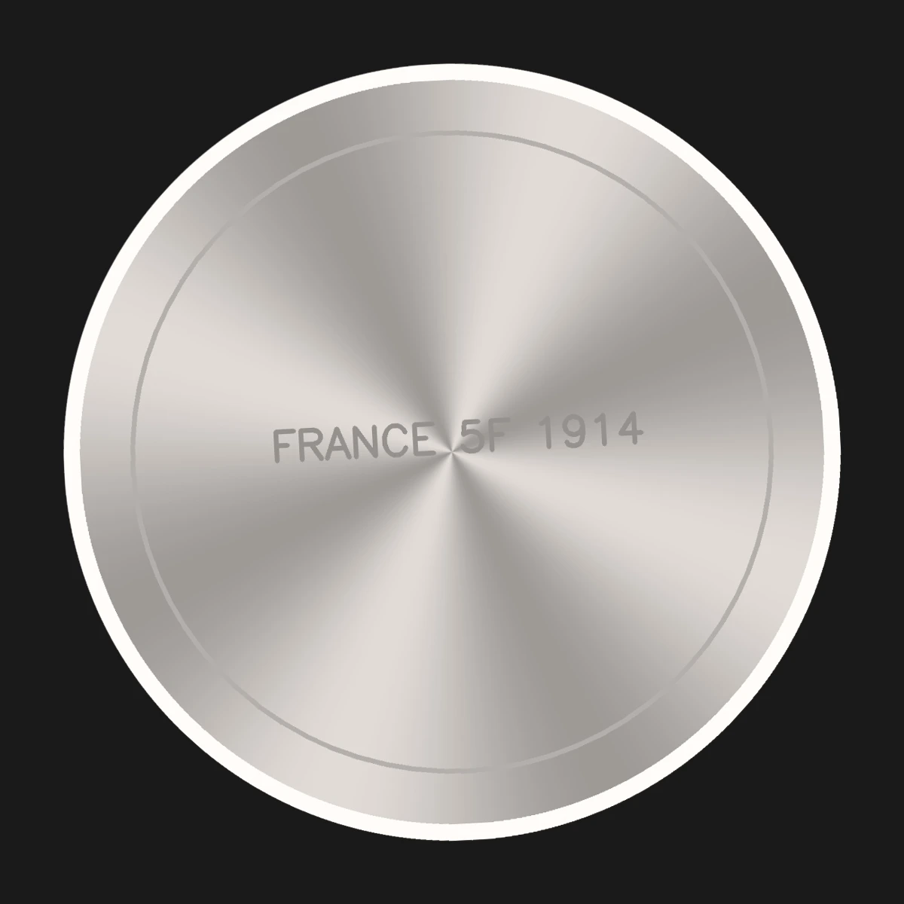

TITAN RELIQUARY · VISUAL QC INSPECTION
Automated Sub-Pixel Planchet Extraction & Forensic Rim Telemetry
● 1 Specimens In Staging Queue
TITAN-300
OBV FACE
France · 1914 · 5 Francs
PASS · 100.0/100



↔
Circularity (b/a)
99.99%
Zero oval distortion (1:1 lock)
Rim Fit Residual
0.052%
RMS boundary deviation
Frame Ratio
86.0%
Standard COIN_FRAC 0.86
Sharpness Score
70.1
Laplacian focus variance
Specular Glare
0.00%
Clipped luster highlights
Tilt Rectification
— None needed
True circular reprojection